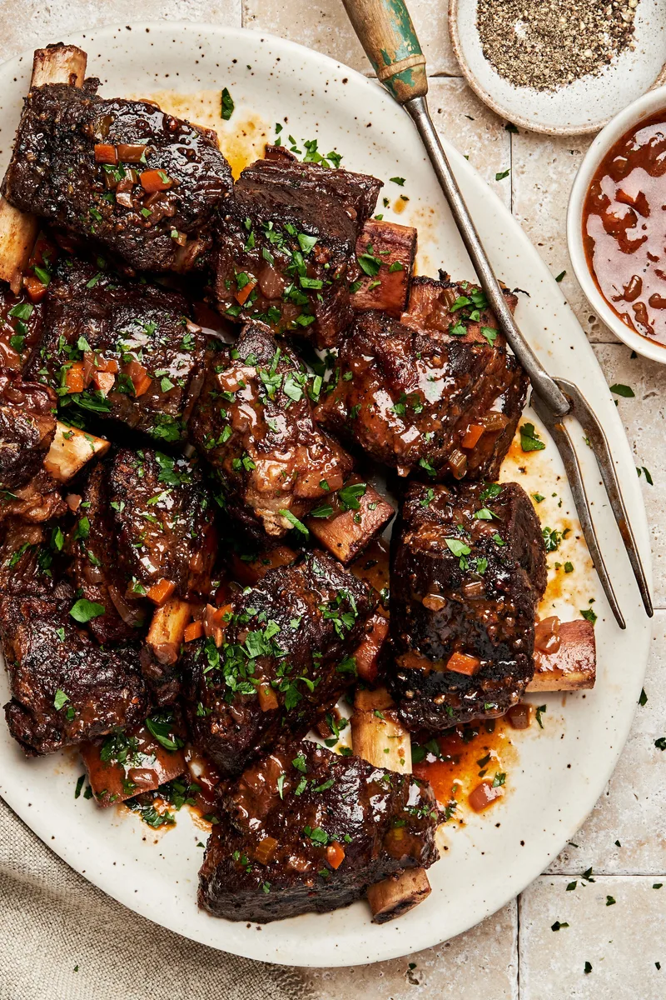

We’ve got you covered with this comforting and hearty short rib recipe so tender you won’t be able to stop yourself from devouring them all in one sitting.
The Easiest, Fall-Off-The-Bone, Best Short Ribs Recipe
If you’ve never had short ribs before, you’re in for a treat! Wine braised short ribs will change your life – and we mean it! Flavorful, soft, fall-off-the-bone meat marinated in a wine sauce, overtop of creamy mashed potatoes will be one of your favorite, cozy meals. In our recipes for beef short ribs, we use a slow cooking method, which allows the short ribs to become rich and tender. And although the short rib recipe may seem intimidating, the oven does most of the work so you can sit back, relax, and in three hours' time, your entire house will smell like you’ve been in the kitchen all day. While you can make this dish anytime (and you will probably want to!), we think it’s the perfect meal for a special celebration. When shopping for your beef short ribs, ask your local butcher for the meatiest thickest ones!